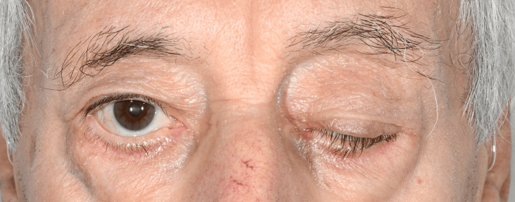

Página 8 · E7
Placa: a força que muda com o uso
“A fraqueza piora ou melhora quanto mais o músculo trabalha?”
A marca da placa
A marca da doença de placa motora é a fraqueza que varia com o movimento/uso. Fatigabilidade: quanto mais usa, mais fraco fica. Facilitação: quanto mais usa, mais forte fica — também existe em doença de placa (menos o “default” prático).
Na prática, a doença de placa mais comum leva a fatigabilidade; miastenia gravis é a representante até prova em contrário.
História e o falso “cansaço”
História típica: acorda bem (escova dentes, penteia cabelo); após o dia/esforço (pós-almoço, após cozinhar) não consegue levantar o braço / escovar de novo. O paciente frequentemente relata “cansaço” — o que está em jogo pode ser fraqueza que ele não nomeia.
Exame: cansar o músculo
O exame pontual (“empurra / puxa” uma vez) pode errar doença de placa; é preciso cansar o músculo. Manobras: braços estendidos durante a conversa — observar se o membro cai com o tempo; manter o olhar no teto — observar ptose que surge com a manutenção.
Se a força varia com o uso → pensar placa; se permanece constante no padrão do andar → outros andares.

Quiz — fixação
-
Qual achado mais empurra para placa?
Gabarito B. variação/fatigabilidade = marca da placa.
A = 1º; C = músculo; D = 2º crônico. tudo que “cansa” vira “ansiedade”.
-
Por que um único “empurra aqui” pode falhar na placa?
Gabarito B. manobra deficitária = tempo de uso.
A/C/D são falsos. exame neurológico “rápido demais”.